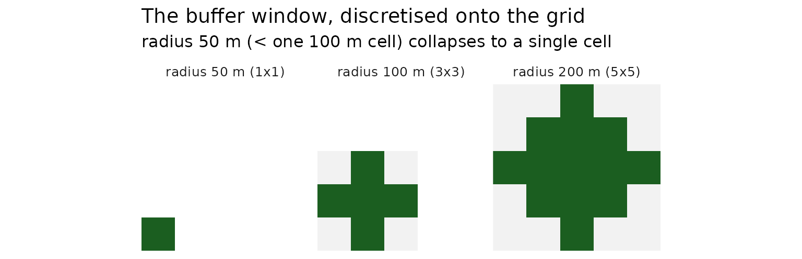
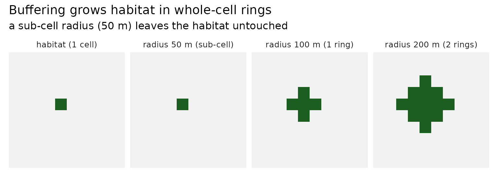
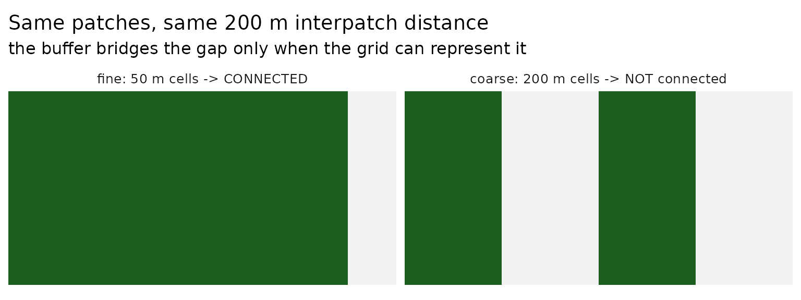

Interpatch distance and raster resolution
Source:vignettes/interpatch-distance-and-resolution.Rmd
interpatch-distance-and-resolution.RmdThis vignette explores a small but important detail when using raster data to analyse connectivity: the relationship between the interpatch distance and the raster resolution.
This boils down to a key idea: if your buffer distance is not a multiple of your raster resolution, you might not be buffering as you might expect. Essentially:
Your buffer radius must be at least one cell, i.e.
This vignette goes into a bit more detail on the topic.
Interpatch distance
When you analyse connectivity you specify an interpatch distance:
the distance between two habitat patches below which they count as connected.
If a species can disperse across a 200 m gap, its interpatch distance is 200 m.
Internally, connectivity is computed by buffering the habitat - growing each patch outward - and seeing which patches then overlap. Because both patches grow toward each other, they meet when the gap between them is twice the buffer radius. So the buffer radius is half the interpatch distance:
habitat_connectivity() takes the interpatch distance and
halves it for you. The lower-level habitat_buffer() is an
operation and takes the buffer_radius directly.
Buffering happens on a grid
When habitat is stored as a raster, a grid of square cells.
habitat_buffer() uses a circular focal window of the
requested radius, but that circle has to be discretised
onto the grid.
The number of whole-cell “rings” it can add is
floor(buffer_radius / resolution):
# 100 m cells
r <- rast(
nrows = 10,
ncols = 10,
extent = ext(0, 1000, 0, 1000)
)
sapply(
c(50, 100, 150, 200),
function(d) {
circle_buffer <- focalMat(r, d = d, type = "circle")
circle_buffer_dim <- dim(circle_buffer)
paste(circle_buffer_dim, collapse = "x")
}
)
#> [1] "1x1" "3x3" "3x3" "5x5"A radius of 100 m (one cell) gives a 3×3 window - one ring. A radius of 50 m is smaller than a single 100 m cell, so the window collapses to 1×1: there is nowhere to grow, and no buffer is possible. A radius of 150m still only gives one ring - it snaps down to 100m.

A sub-cell radius does nothing - and habitat_buffer()
warns
Because the window collapses, buffering by less than one cell leaves
the habitat exactly as it was. habitat_buffer() detects
this and warns you, then returns the habitat unchanged (rather than
letting terra::focal() error):
hab <- r
values(hab) <- NA
# one habitat cell
hab[5, 5] <- 1
# sub-cell: warns, no-op
b50 <- habitat_buffer(hab, buffer_radius = 50)
#> Warning: Can't represent the buffer at a resolution of 100m.
#> ✖ Buffer radius (50m) is smaller than one raster cell.
#> ℹ This radius corresponds to an `interpatch_distance` of 100m.
#> ℹ Gaps between patches aren't bridged; only touching patches are linked.
#> ℹ Rule of thumb: keep resolution <= interpatch_distance / 2 (use finer cells,
#> or a larger interpatch distance).
#> ℹ See `vignette(urbioconnect::interpatch-distance-and-resolution)`.
# one ring
b100 <- habitat_buffer(hab, buffer_radius = 100)
# two rings
b200 <- habitat_buffer(hab, buffer_radius = 200) 
Why it matters: the same distance, two resolutions
This is the crux. Connectivity is resolution-dependent. Two patches with a 200m gap need a 100 m buffer each to link. At a fine resolution that buffer is representable and the patches connect; at a coarse resolution the same 100 m buffer is sub-cell - a no-op - and the patches stay apart, even though the interpatch distance hasn’t changed.

Choosing a resolution
The practical rule of thumb: your buffer radius must be at least one cell, i.e.
For an interpatch distance of 200 m, work at 100 m cells or finer. If
the resolution is too coarse for the interpatch distance you’ve asked
for, habitat_buffer() (and therefore
habitat_connectivity()) will warn that the buffer can’t be
represented - increase the resolution, or use a larger interpatch
distance.
What about vector (sf) data?
Everything above is specific to raster data. The
vector path (sf_habitat_buffer(), via
sf::st_buffer()) buffers in continuous coordinate
space - there is no grid and no resolution, so any
buffer radius produces an exact buffer. The sub-cell “no buffer” problem
simply does not arise, which makes the vector approach a good fit when
your interpatch distance is small relative to a practical raster
resolution.
The vector equivalent of discretisation is nQuadSegs:
the number of straight segments used to approximate each quarter-circle
of the buffer. It controls the smoothness of the buffer
outline, not whether the buffer exists. The package uses
nQuadSegs = 5 (a 20-sided polygon), which sits slightly
inside the true circle - enough to matter only for patches
whose gap is right at the threshold. Unlike resolution, it is never a
cliff: the buffer always forms, at any radius.